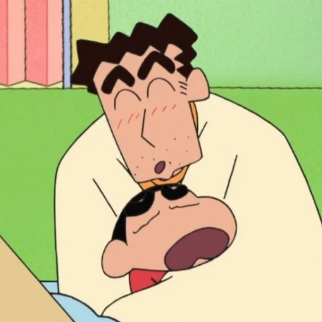
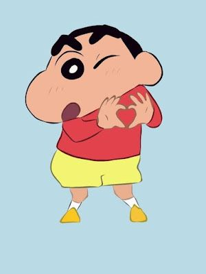
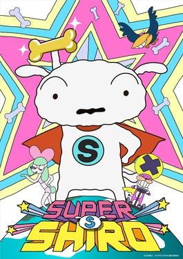
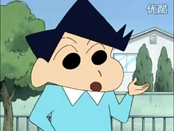
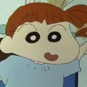
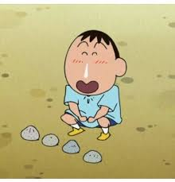
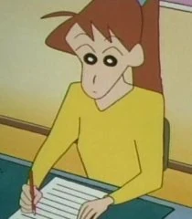
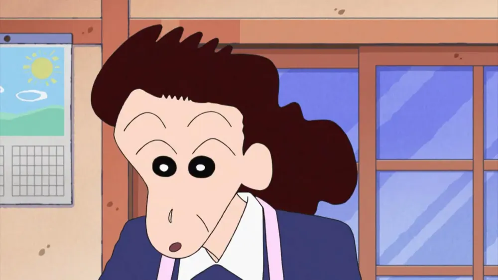
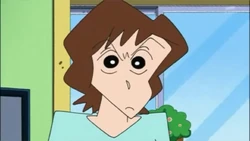
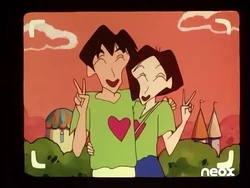

Father Harry
He works as a low-level manager at
the marketing firm "Futaba Corporation

Mother Misae
Shin Chan's mother's name is Misae Nohara, also known as Mitsy

Shinchan Hero
Shinchan is the naughtiest 5 year old boy around.
He is smitten with older women,
an urge he never manages to saturate.

Himawari Younger Sister
She is similar to her mother in her utterly
stubborn pursuit of handsome young men who catch her eye

Shiro
When the Nohara family have to
bring him into places that don't allow pets,
He also knows how to take care of Himawari
when they are by themselve

Kazama
who is known for his serious and calm demeanor,
often contrasting with Shin-chan's wild antics.

Masao Sato
He is always crying on
little things and when he is not
crying he is always happy

Nane
Nene gives Shinchan her husband's role of characters when
they play 'real house' which is her favorite game.

Bo-Chan
Bo-chan is characterized by his slow and stoic nature,
which belies his intelligence. He often
surprises his friends with insightful comments and observations.

Ai sutome
She is the most intelligent girl in her
class and the most intelligent student after Toru.
She is also a fierce rival of Nene.

Bunta Takakura
So Bunta Takakura is a 48 year old principal of futaba kindergarten
where as his wife is the vice principal he is a kind hearted man
who loves children and always thought of building a kindergarten.

Yoshinaga
In Crayon Shin-chan, Yoshinaga is Shin-chan's teacher
at Futaba Kindergarten, known for her rivalry with Ume Matsuzaka,
and she is married to Junichi Ishizaka

Matsuzaka
In the Crayon Shin-chan series, Matsuzaka is a teacher
at Futaba Kindergarten, specifically the teacher of the Rose
class, and
she is known for her rivalry with Yoshinaga

Masumi
A relatively new 23 year old teacher who handles the
Tulip class. She seems to be nervous of everything and
experiences panic attacks when facing a large groupa

Takakura
She is the wife of Bunta Takakura and the vice principal
of Futaba Kindergarten,
where Shin-chan and his classmates attend.

Nohara Ginnosuke
Like his son and his grandson, Shin-chan,
he enjoys looking at pretty young women. He also likes to
do weird things
with his grandson and has taught him many of his habits.

Tsuru Nohara
the mother of Semashi Nohara and Hiroshi Nohara,
the wife of Ginnosuke Nohara, the mother-in-law of
Misae Nohara (nee Koyama), and also the paternal grandmother
of Shinnosuke and Himawari. She is 62 years old.

Yoshinaga Koyama
He is 66 years old. As a retired teacher,
he has much higher standards of public decorum
than his son-in-law's father Ginnosuke.
This uptight behavior of his sometimes becomes
the subject of jokes for
Shin-chan and a clash of style between him and Ginnosuke.

Musai
She got angry when her father did not allow her to
become a photographer. Her father got angry too and told
her to get out of his house. She went away to Kasukabe where
her sister lived. During her brief stay of three
months there, she was troubled by Shin-chan a lot.

Action Mask
the "Action Mask" persona, a superhero idolized by Shinnosuke,
is a recurring theme, with Shin-chan often acting out
his own version of Action Mask's actions and adventures,
sometimes even impersonating him.

Quantum Robo
"Quantum Robo" is a popular toy and character
of Shin-chan's, and in the "Nijigennomori"
Crayon Shin-chan Adventure Park, there's an attraction
called "Fluffy! Quantum Robo!" where children can bounce
and play
inside a large, fluffy dome shaped like the robot.

Nanako
Nanako is the only girl that is unruffled by Shin-chan's
behavior, and the only one Shin-chan tries to behave for,
even being shy and blushing around her.

Mitsuko Kazama
She has the appearance of a rich man's wife.
She lives with her son in a very luxurious house in Kasukabe.
She is very affectionate with her son,
but also very strict as far as studies are concerned.

Moeko Sakurada
She is easily irritated by Shin-chan,
whom she despises, and Misae because she always seems
to rub her the wrong way whenever they meet.

Ekasuky Sato
the mother of Masao. While in her first episode
she has a regular posture, she gains weight in
later episodes. Her face looks almost identical to
that of Masao. She plays tennis and video
games, and is fan of South Korean celebrities.

Yoshirin and Michi
They are a quirky and eccentric married couple who often
appear as neighbors of the Nohara family.
Known for their overly affectionate and energetic
personalities, they bring humor and light-hearted
moments to the show. Their interactions
often showcase their unique relationship dynamics,